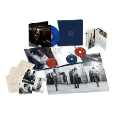
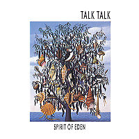

Obsessions and Lamentations #8
By Alan Shulman
1) Miles Davis – A Kind of Blue Anniversary Edition

So many different releases of this jazz masterpiece exist that it’s only fitting that Christmas 2008 should be an opportunity to drop one more “definitive” edition. In this case, it’s an elegantly packaged set with a cd, dvd, blue vinyl, book, poster, condoms, etc, to celebrate the 50th anniversary of the original release. Ok, this is certainly something to be celebrated, especially in these baleful times when real, sophisticated, grown-up emotions aren’t something you’re going to hear much on the radio or on the Indieworld hit parade for that matter. Modal jazz was a bit of an academic exercise bearing faint resemblance to the overly-cerebral serial movement of the last century, with rules for which modes to explore in which order, for example. But what Miles and his esteemed crew did with it to make it palatable, in fact endlessly enjoyable, is a matter of well-documented history, some of which is apparently stuffed into this $100 gift basket. The fact is, anybody who already loves this music has no need to shell out that kind of green to tell them what they already know, and as for neophytes, you should be aware that one of the great advantages of living in a modern Gomorrah is that you can find titles like Kind of Blue and Blonde on Blonde in the bargain bin of your local record store. As for me, I just purchased a first pressing mono vinyl copy of the album from a local seller. It’s not much to look at, it’s only the music as it was first presented, and it’s glorious.
2) Animal Collective
I’ve spent most of the morning listening to the new AC record over and over again after reading the rave review from our very own Tom Whalen and I’ll admit that I still don’t know what to make of it. I’ve followed them closely since Sung Tongs and I can probably agree already that this is the best thing they’ve done so far. It definitely sounds like a summation, progression and perfection, all at the same time, of their singular aesthetic. Still, something keeps nagging at me, and it’s the same problem I had with the Panda Bear record. For all its energy and brilliance, why does something about this band always leave me a little cold? What makes me admire MPP more than I love it? Somehow, and I know this is strange, I prefer this band as fabulous background music rather than active listening music. I love what they do with harmony, rhythm and repetition so I’m really struggling with what might be missing. Perhaps it’s a tad too experimental, or a trifle too considered to really sweep me off my feet. But that’s not completely convincing. Maybe the multifarious intertwining lines are too untethered from a central, unifying purpose, so that the whole thing floats, rootlessly in the air, leaving it just out of reach. Or maybe that’s what I like about it. I guess I’m not sure what to feel listening to this music. It seems too carefully constructed to be as ecstatically joyful as it sounds on the surface. Whatever, it remains a mystery to me. An enchanting mystery though, I’ll grant you that.
3) Talk Talk

Speaking of mystery, how the hell did synth-pop band Talk Talk ever morph into the group that produced 1988’s Spirit of Eden? I’m left pondering this question after ignoring this record for years and finally breaking down to buy a copy a couple of weeks ago. It’s an extraordinary experience, listening to this album from start to finish in one sitting, which I’m convinced is the only way it can be fully appreciated. It’s simultaneously sexy, anguished and uplifting and I’m shocked that the 80s produced anything remotely like it. It’s too laden with empty space and a beating heart to have come out of the new wave movement that spit this band out in the first place. I don’t know what kind of real influence it had on what became slo-core and post-rock in the 90s, but it stands as a monument to the pursuit of an artistic vision, independent of commercial considerations. By turning their backs on the game of churning out drab follow-ups to their early singles they created something lasting, dare I say timeless. Yes I dare, because it applies. This album could have come out yesterday and still have been as mindblowing, setting the internet aflame with buzz. It’s too bad for them they made it at a time when the public’s desire for arty music was at its nadir. Maybe it’s a tortoise and the hare thing – slow and steady will eventually win the race. People will be coming back to this record for years to come, so maybe the royalty checks will add up to something substantial over the long haul, and Hollis and Friese-Greene can have the last laugh in the end.
8 January, 2009 - 20:35 — Alan Shulman